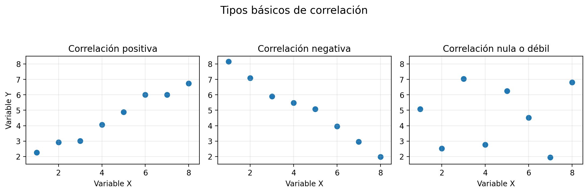
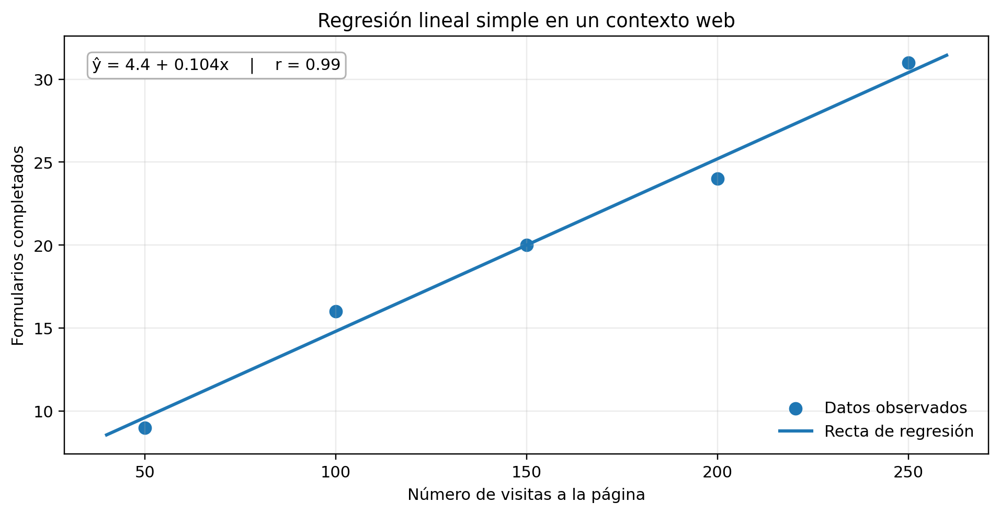

Aplicación de correlación y regresión lineal simple en el análisis de datos web
En el analisis de datos suele ser necesario estudiar como se relacionan dos variables. Por ejemplo, en una tienda virtual puede interesar saber si al aumentar el numero de visitas tambien aumentan los formularios completados.
Tambien puede ser util analizar si el tiempo de permanencia en una pagina se relaciona con la cantidad de clics o si el numero de campañas publicitarias guarda alguna relacion con las conversiones.
La correlacion muestra la direccion y la fuerza de la asociacion lineal entre dos variables, mientras que la regresion permite construir una ecuacion para estimar o predecir un valor a partir de otro.
En esta guia se trabajaran ejemplos vinculados con datos web, graficos de dispersion, interpretacion del coeficiente de correlacion y uso basico de la recta de regresion como apoyo para la toma de decisiones.
Objetivos de aprendizaje
🧠Comprender que es la correlacion e identificar si la relacion entre dos variables es positiva, negativa o nula en situaciones sencillas del analisis web.
📊Interpretar el coeficiente de correlacion y reconocer cuando una relacion lineal es fuerte, moderada o debil a partir de tablas, graficos y datos del entorno digital.
💡Aplicar la regresion lineal simple para estimar valores y apoyar decisiones basicas sobre visitas, clics, formularios o conversiones mediante herramientas digitales.
La correlacion es una medida que describe como cambian juntas dos variables. Si una aumenta y la otra tambien, se habla de relacion positiva. Si una aumenta y la otra disminuye, se trata de una relacion negativa.
Cuando no hay una tendencia lineal clara entre las variables, la relacion puede considerarse nula o muy debil.
Idea clave
La correlacion describe como se mueven juntas dos variables; la regresion, ademas, permite estimar una variable a partir de la otra.
Positiva
Si una variable aumenta y la otra tambien tiende a aumentar.
Negativa
Si una variable aumenta y la otra tiende a disminuir.
Nula o debil
Cuando no se aprecia una tendencia lineal clara.
La correlacion positiva indica que, en general, al aumentar una variable tambien aumenta la otra. La correlacion negativa muestra que al crecer una variable, la otra tiende a disminuir.
Estas relaciones se observan mejor en un diagrama de dispersion. Cada punto representa un par de datos y la forma en que se agrupan ayuda a reconocer si existe o no una tendencia.

Horas de campaña (X)
Visitas a la landing page (Y)
1
120
2
145
3
170
4
210
5
230
6
260
El coeficiente de correlacion de Pearson, representado con la letra r, resume numericamente la fuerza y la direccion de la relacion lineal entre dos variables. Su valor siempre esta entre -1 y 1.
Cuando r esta cerca de 1, la relacion lineal es positiva y fuerte. Cuando r esta cerca de -1, la relacion lineal es negativa y fuerte. Cuando r esta cerca de 0, la relacion es debil o inexistente.
Valor aproximado de r
Interpretacion
Cerca de +1
Relacion positiva fuerte
Entre +0,3 y +0,7
Relacion positiva moderada
Cerca de 0
Relacion lineal debil o nula
Cerca de -1
Relacion negativa fuerte
Ejemplo: si r = 0,92 entre visitas y formularios enviados, la relacion es positiva y fuerte. Si r = -0,81 entre tiempo de carga y satisfaccion, la relacion es negativa y fuerte.
Aunque dos variables esten relacionadas, eso no prueba por si solo que una sea la causa de la otra. Puede haber otros factores involucrados, como campañas, cambios de diseño o temporadas.
La correlacion es muy util para descubrir patrones, pero la interpretacion correcta exige mirar el contexto y otras posibles variables que puedan estar influyendo.
Asociacion
Dos variables pueden moverse juntas sin que una cause a la otra.
Contexto
Siempre conviene revisar campañas, cambios, temporadas o factores externos.
Decision analitica
El analisis responsable combina correlacion, contexto y evidencia complementaria.
La regresion lineal simple utiliza una variable independiente X para estimar el comportamiento de una variable dependiente Y. Su representacion mas conocida es la ecuacion de la recta.
Ecuacion basica
ŷ = a + bx
ŷ: valor estimado de Y, a: intercepto, b: pendiente.
La pendiente b indica cuanto cambia Y cuando X aumenta una unidad. El intercepto a es el valor estimado de Y cuando X es igual a cero.
Visitas a la pagina (X)
Formularios completados (Y)
50
9
100
16
150
20
200
24
250
31

Simulador de prediccion con regresion
Explora como cambia el valor estimado de formularios a partir de una ecuacion lineal simple.
Guia rapida
a representa el intercepto de la recta.
b indica cuanto cambia Y cuando X aumenta una unidad.
ŷ es un valor estimado, no una garantia exacta.
En entornos educativos y profesionales, la correlacion y la regresion suelen calcularse con herramientas digitales. Excel y Google Sheets permiten insertar graficos de dispersion, agregar lineas de tendencia y mostrar ecuaciones. Jamovi facilita el calculo del coeficiente de correlacion y genera salidas estadisticas mas completas.
Herramienta
¿Que permite hacer?
Aplicacion sencilla
Excel
Crear tablas, diagramas de dispersion y linea de tendencia
Relacionar visitas con clics o conversiones
Google Sheets
Analizar datos compartidos y graficarlos en linea
Seguir metricas basicas de formularios o campañas
Jamovi
Calcular correlacion y regresion con salidas automaticas
Interpretar r, pendiente y ajuste del modelo
El analisis de correlacion y regresion ayuda a comprender patrones de comportamiento de los usuarios y a respaldar decisiones con evidencia. Permite explorar si ciertas variables del sitio se mueven juntas y construir estimaciones sencillas sobre registros, clics, visitas o permanencia.
Actividades de aprendizaje
1. Simulador del tipo de relacion
Analiza cada caso y define si la relacion esperada entre las variables es positiva, negativa o nula.
Si aumenta el tiempo de carga de una pagina y disminuye la satisfaccion del usuario, la relacion es:
Si al enviar mas campañas de correo tambien aumentan las visitas al sitio, la relacion es:
Si se compara el color favorito de los usuarios con la cantidad de clics en un boton, la relacion esperada es:
2. Simulador de interpretacion de r
Interpreta el signo y la magnitud del coeficiente de correlacion para cada valor.
Si r = 0,88, la interpretacion correcta es:
Si r = -0,76, la interpretacion correcta es:
Si r = 0,09, la interpretacion correcta es:
3. Simulador de prediccion con regresion
Usa la ecuacion de regresion ŷ = 4 + 0,10x, donde x es el numero de visitas y ŷ el numero estimado de formularios completados.
La pendiente 0,10 en este contexto significa que:
Evaluación
Quiz tema 3. Aplicacion de correlacion y regresion lineal simple en el analisis de datos web mediante herramientas digitales.
Recursos para profundizar
Video explicativo
Recurso audiovisual para reforzar la correlacion y la regresion lineal simple en el analisis web.
Anderson, D. R., Sweeney, D. J., Williams, T. A., Camm, J. D., y Cochran, J. J. (2019). Estadistica para negocios y economia (13.a ed.). Cengage Learning.
Cadena Lozano, J. B. (2024). Estadistica descriptiva y probabilidad para los negocios con aplicaciones en Excel y Jamovi (1.a ed.). Editorial CESA.
Lind, D. A., Marchal, W. G., y Wathen, S. A. (2018). Estadistica aplicada a los negocios y la economia (17.a ed.). McGraw-Hill Interamericana.
Triola, M. F. (2018). Estadistica (12.a ed.). Pearson.
Walpole, R. E., Myers, R. H., Myers, S. L., y Ye, K. (2012). Probabilidad y estadistica para ingenieria y ciencias (9.a ed.). Pearson.